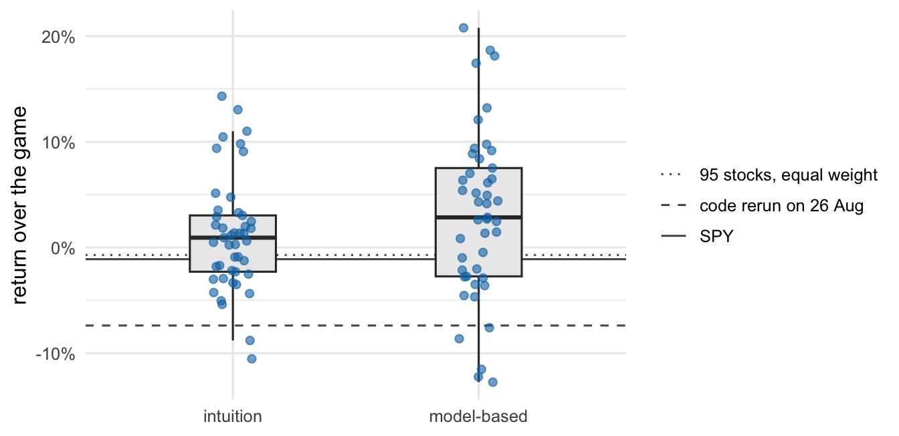
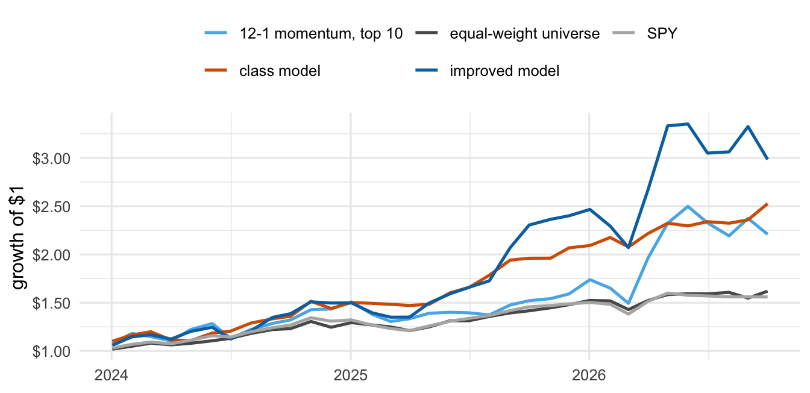

The stock model that looked too good
Revisiting the class stock game: a gradient boosting model with a spectacular backtest, a losing live trade, and what is left once the backtest is cleaned up
machine learning
finance
gradient boosting
The class XGBoost model printed a Sharpe ratio of 10. Fixing the arithmetic, the weights and the features shows how much of that was real, and a rebuilt model shows how little predictability is left.
In class, 45 teams each ran two $100,000 portfolios from 26 August to 1 November 2026. One was picked by intuition; the other followed a gradient boosting model. This post asks: did the model actually predict which stocks would outperform, and can a better-built version do it?
The experiment
The class model is XGBoost on 95 large US stocks. From daily prices it builds momentum over one, three and six months, one-month volatility, five-day reversal and the day’s return relative to SPY, and predicts each stock’s return over the next 20 trading days. It trains on 2022-2023, tests on 2024 onward, and each month buys the ten stocks with the highest forecasts. Its backtest printed a Sharpe ratio of 10.2.
What we learned from the game
Model portfolios returned 3.1% on average against 1.2% for intuition, and won for 67 percent of teams. That is weaker evidence than it looks: the paired test gives p = 0.10, and the bootstrap 95 percent interval for the gap runs from -0.3% to 4.1%.
Rerunning the posted code on the game’s first morning, its ten picks lost 7.4% by 1 November while SPY lost 1.1%. Run on any trading day from 17 August to 4 September it recommends a losing portfolio, and by early September its list shares only 3 of ten names with the 26 August one. The class average therefore reflects how teams implemented the picks more than the model, and the lesson is that one two-month game cannot separate skill from luck.
Why predicting returns is hard
Monthly stock returns are mostly noise: a forecast explaining one percent of their variance would be worth a great deal. Whatever is predictable gets traded away once investors notice it, and patterns estimated on 2022-2023 need not hold in 2025. Meanwhile a backtest has many ways to look good by accident, and the class backtest found four:
- It annualizes monthly returns with √252 instead of √12. The Sharpe ratio is 2.2, not 10.2.
- An
ifelse()slip gives every stock the top stock’s weight, so weights sum to 1.81 on average: hidden leverage. recipe(target ~ .)feeds in raw prices and volume. Yahoo adjusts past prices for later stock splits, so those levels carry information from the future.- Building the 20-day target drops the latest 20 days, so “current” picks use month-old signals.
The improved model
The rebuilt model uses only stationary signals (12-1 and 6-1 month momentum, short-term reversal, volatility, beta, distance from the 52-week high, relative volume), ranked across stocks each month. It predicts returns relative to the month’s average, uses one non-overlapping observation per month from 2013, refits monthly on outcomes already known, and takes its hyperparameters from 2019-2023 alone. It holds its top ten equally and pays 10 basis points per trade.
Out-of-sample results
All models are scored on the same 34 monthly formations, January 2024 to October 2026, which played no part in tuning. The simple benchmarks are holding all 95 stocks equally and a one-line rule: buy the ten stocks with the best 12-1 month momentum.
Predictive performance
| Model | Rank IC | R² | Top 10 minus bottom 10, monthly |
|---|---|---|---|
| class model | 0.057 (t = 2.84) | -6.7% | 2.4% (t = 3.39) |
| class model without price levels | 0.025 (t = 1.09) | -7.3% | 0.4% (t = 0.55) |
| improved model | 0.042 (t = 0.89) | 0.6% | 2.9% (t = 1.68) |
| 12-1 momentum | 0.039 (t = 0.85) | 1.4% (t = 0.82) |
The class model ranks stocks well only with its price-level features. Without them its rank correlation is indistinguishable from zero, and either way its forecasts are worse than forecasting nothing (negative R²). The improved model’s R² is positive but tiny, its top ten beat its bottom ten by 2.9% a month with a t-statistic of only 1.68, and its rank correlation is barely above the momentum rule’s.
Investment performance
| Strategy | Total return | Sharpe | Beta | Worst drawdown | Alpha vs equal weight | Turnover |
|---|---|---|---|---|---|---|
| class model | 153% | 2.28 | 0.92 | -8% | 15.1% (t = 2.23) | 64% |
| improved model | 198% | 1.38 | 2.31 | -16% | 16.2% (t = 0.88) | 28% |
| 12-1 momentum, top 10 | 121% | 1.10 | 2.01 | -14% | 8.2% (t = 0.47) | 26% |
| equal-weight universe | 62% | 1.71 | 0.75 | -7% | ||
| SPY | 56% | 1.45 | 1.00 | -10% |

The improved model earns the most, 198% (182% to 213% across ten random seeds), with under half the class model’s turnover. But its beta is 2.31 and half its picks were chip stocks, 8 percent of the universe: a concentrated bet on the technology rally, with twice the passive portfolio’s drawdown. Its Sharpe ratio is below simply holding the 95 stocks, its alpha is not distinguishable from zero, and in the game window its picks lost 7.9%, like the original’s. The class model’s alpha disappears (t = 0.32) once the look-ahead features are removed. Neither offers returns an investor could rely on.
What the figures show together
Figure 1 shows a fragile game result and a recommendation that lost money. Table 1 shows that, scored honestly, neither model forecasts much better than a momentum sort, and Table 2 and Figure 2 show that the improved model’s high return is risk taken, not skill. The more sophisticated model still fails to predict returns; what improved was the evaluation.
Scripts are in R/; details in README.md. Prices from Yahoo Finance via tidyquant.